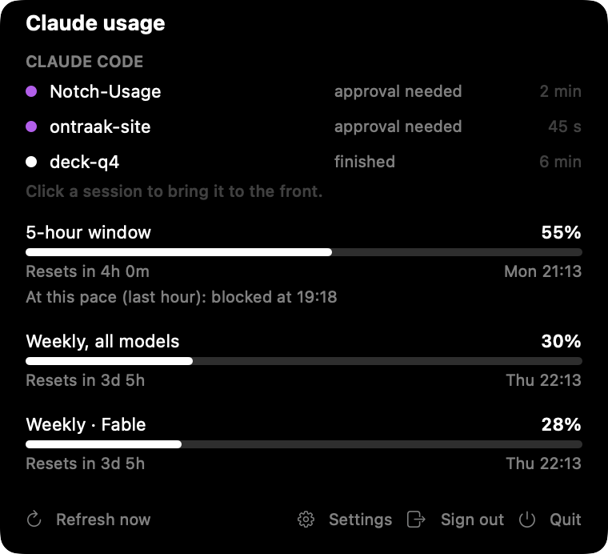

The island shows your usage right of the notch. On the external display, the capsule keeps its detail.
The island stays on the Mac. A capsule in the middle of the menu bar and the menu bar icon show the time left and waiting Claude Code sessions. Point at the top of the screen to open the panel just below the bar.

External display